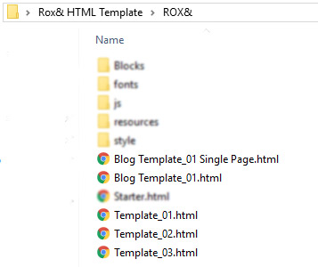
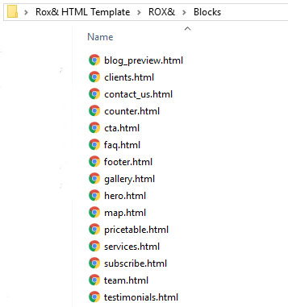
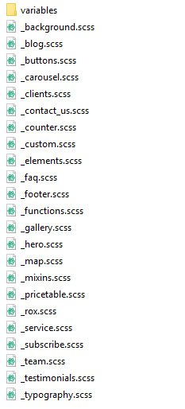
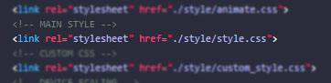
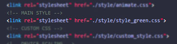

Thanks for purchasing or considering ROX&. This template was built from the ground up with ease of use and affordability in mind. The user experience of both your visitors and you yourself was the backbone of this entire project. With that in mind, we encourage you to take a look through this documentation to learn exactly how ROX& works.
ROX& assumes you have at least a beginner level of experience with basic web-development. Nothing crazy, just knowledge of a text-editor, as well as simple HTML and CSS markup experience.
ROX& was built with Bootstrap at its foundation. You don't need to know Bootstrap to work with ROX&, but understanding key elements of Bootstrap, such as its grid system, will allow you to better understand the markup that builds your site.
ROX& was developed using SASS. If you're already familiar with SASS, then fantastic, you're equipped to get the best out of ROX&. If you aren't familiar with SASS, no worries, ROX& is designed to be usable
by non-advanced developers and designers as well. You can basically forget this SASS thing; if you don't know it, you don't need it.
(of course we recommend learning it in general, SASS is a brilliant little piece of kit).
ROX& Makes use of a variety of frameworks and plugins to produce a fantastic user experience for you as well as your end user. These dependencies are:
ROX& uses a variety of web-fonts and font-icons. Those are:
ET Line icons work much the same way as Font Awesome font icons. Included here is a list of ET Line icons and their associated classes.
Following is a small example of how to use ET Line Icons.
ROX& is designed to be easy to use. With a basic understanding of HTML and CSS, you can easily create a site that looks great. This 5 Minute Rundown is all you need to begin working with ROX&.
More detailed explanations of ROX&'s various systems are provided in the below sections.
To work with and edit ROX& templates you will need to be familiar with a text editor. ROX& was developed using Atom, but any text editor will do.
Familiarity with SASS will allow you to make style changes easily, but is not required.
You will also need a web-server to host your files on, but this is outside of the scope of this documentation.
ROX& provides a variety of templates to start with. These templates are built section by section in a modular fashion. This process allows the designer/developer to quickly re-order content blocks in an intuitive way.
These pre-built template HTML files can be found in the main ROX& folder. These templates can be opened and viewed in any web browser. Look through all of them and find one you like. Copy your prefered template, and re-name it as you please. Make sure your copied HTML file remains in the same folder as the other HTML templates.
The template files and their path
Than simply open up your newly copied HTML file, and replace the filler text, images, links, etc with your own content.
If you would prefer, you may build your website piece by piece with individual content blocks. This is a more advanced process, and may take more time than simply editing a provided template, but it will allow you a greater degree of control. It is recommended that you have an advanced text editor for this process.
For this purpose, a file called starter.html is included in the main ROX& directory. Copy and rename this file, and open it in your text editor of choice. Besides scripts, the body element of this file is empty, you will be building your site based on the content block files we will explore next.
Opening up the Blocks folder in the main Directory, you will see a variety of HTML files. Each of these files represent one type of content block, with each filename making it more or less evident of what each block is.
The content block files, subject to change
Each individual block file may contain multiple versions of the block for better customization.
Look through these files in a browser of your choice to get an idea of what kind of content each of them has. When you identify a content block you would like to add, all you need to do is scroll down to the code windows just below the example, and click 'COPY' in the corner. This will copy the code to your computer's clipboard. From there, simply paste the code into your copied version of starter.html in whatever hierarchy you want.
From there, you can modify each of the sections as you please. Most sections have a corosponding scss file for styling that you may also edit.
In depth comments are provided on each of the section blocks.
Each content block is contained inside a section element. Generally, each section element will have a bootstrap container, in which the block's content will exist. Classes and other elements can be added to a section element to achieve different effects. Every main content holding section element should have the class '.rox'.
Most sections are able to be converted into a dark counter-part by adding the class '.dark'. Following is an example of this.
Indeed, simply appending the class '.dark' to the main content block section will turn that section dark. No other work needs to be done. Try it in on a provided template.
In ROX& backgrounds are added as separate elements inside the section. This allows us greater control over the way the background looks. Look to the following code for an example.
Some classes you can add to the background i element are as follows:
| Class | Effect |
|---|---|
| overlay | Changes the blending for the background to Overlay |
| lighten | Changes the blending for the background to Lighten |
| darken | Changes the blending for the background to Darken |
| fixed | Sets the background attachment to 'fixed' |
| left | Sets the background position to 'left' |
| right | Sets the background position to 'right' |
| repeat | Returns the background image to auto scale and makes it repeat. Use this for repeating background textures. |
All content blocks will have a background element present and commented out. Unless you are building your own blocks based on the ROX& style you will probably not run into a situation where you need to add this code to a block.
Video backgrounds are achieved in roughly the same way as image backgrounds, but with a video element instead. The follow code gives an example of how to format this
A video background can be added to any main section.
Following are a few other classes that can be added to the main section.
| Class | Effect |
|---|---|
| p-none | No Top/Bottom padding. |
| p-xsmall | Extra Small Top/Bottom padding of 2rem |
| p-small | Small Top/Bottom padding of 5rem |
| p-large | Large Top/Bottom padding of 9rem |
ROX& uses Scroll Reveal 3 for the 'slide-in' on scroll effect you can see in the included template files.
ROX& also uses some custom code in addition to Scroll Reveal in order to increase Scroll Reveal's functionality.
You can now define certain additional Scroll Reveal effects right in the html markup using data attribute. Don't know what those are, but you still want some content to reveal on scroll? Don't worry, there's a simple way to define a reveal target, read on!
If you don't want to, or don't need to fuss around and get reveal effects tailored just right, all you need to do is add a class of 'sr' to any element you want to reveal on scroll.
That's it. This works with almost all elements, included the entire body element if you want (you probably shouldn't).
Want a bit more control? Read on.
Do you know what a data attribute is? Want To Learn? If you want to have deeper control over the way your content reveals, you can use data attributes.
Let's take a look at each, remember that you should understand what a data attribute is first before using this functionality.
Use this data attribute to change the direction the content reveals from.
| Attribute | Effect |
|---|---|
| data-sr-origin="left" | Content reveals from the Left |
| data-sr-origin="right" | Content reveals from the Right |
| data-sr-origin="top" | Content reveals from the Top |
| data-sr-origin="bottom" | Content reveals from the Bottom |
Use this data attribute to change the distance of the slide-in reveal.
| Attribute | Effect |
|---|---|
| data-sr-distance="100px" | Content reveals from 100px away |
| data-sr-distance="***px" | Remember: Any amount can be used |
Use this data attribute to change how long the content takes to fully reveal (in milliseconds).
| Attribute | Effect |
|---|---|
| data-sr-duration="500" | Content takes 500ms to fully reveal. |
| data-sr-duration="***px" | Remember: Any amount can be used |
Use this data attribute to change the scale of the element when it starts to reveal. The element will than grow or shrink to be scaled to 100% at the completion of the reveal.
| Attribute | Effect |
|---|---|
| data-sr-scale="1" | No scale effect at all. |
| data-sr-scale="0" | Also no scale effect at all. Set to at least .1 for an effect. |
| data-sr-scale=".1" | Element will start at a scale of 10% and grow to 100% |
| data-sr-scale="2" | Element will start at a scale of 200% and shrink to 100% |
| data-sr-scale="***" | Remember: Any value can be used here. |
Use this data attribute to change the opacity the element starts at.
| Attribute | Effect |
|---|---|
| data-sr-opacity="0" | Element starts fully transparent and fades in. |
| data-sr-opacity=".1" | Element starts 10% visible and fades in. |
| data-sr-opacity="1" | Element starts 100% visible |
| data-sr-opacity="***" | Remember, any number between 0 - 1, including decimals can be used here. |
These are a bit more involved, but not by much. You can add elements into 'sets' to allow them to reveal as a cascade. That is, one revealing after the other. It's a pretty nice effect and you can find it on display at certain parts of the included templates.
Lets take a look at the markup
| Attribute | Effect |
|---|---|
| data-sr-set="*YOUR SET NAME*" | Reveal all content with the same set name in a cascade based on HTML hierarchy. |
You probably already figured it out, but you add the above attribute, along with a 'set name' of your choice, to as many elements as you choose.
Those elements will than reveal in a cascade as soon as the first element is revealed.
As well, the attributes of the final element in the set hierarchy will be used for the entire set.
Lets take a look at a code example:
The 4 divs in that example will reveal in a cascade because they are all part of the same data-set ('dataset1')
The final div has other data attributes which will also be applied to every other elements in the hierarchy.
ROX&'s styles are built using SASS. It's no problem if you have no experience with SASS, and changes to the style you can do with normal CSS, but SASS will make those changes easier to implement.
Changing the styles should only be done by an knowledgeable developer or designer. ROX& has many moving parts, and so a faulty edit could cause style problems. If you know what you're doing, please follow along.
Generic ROX& themeing, typography, backgrounds, variables, and individual ROX& content blocks have their own .scss file. These files exist in the 'style' folder in the main ROX& directory.
The main .scss file is 'style.scss'. This file, when compiled, consolidates all the other .scss files into one 'style.css' file, the file that the browser loads.
If you wish to make changes or add additional styles, you may use the included '_custom.scss' file, to be compiled into the final .css file, or you can roll your own if you know what you're doing.
It is not recommended that you change other .scss files directly, as these files may be updated on future releases.
On updating, do not overwrite the _custom.scss file if you are using it.
In the 'style' folder in the ROX& directory you will find a file called 'custom.css'. You can use this file to change already existing styles or add new ones.
It is not recommended that you directly change the style.css file, as this file may be updated in future release, or would be overwritten if the SCSS is every re-compiled.
ROX& is designed with a single accent color in mind. This color is featured throughout the webpages to draw attention and just generally make everything look nice.
The default color is our favorite, but you may find yourself wanting something different. ROX& features a variety of alternate color style.css files. These files are named accordingly, as 'style_{COLOR}.css'.
If you wish to load one of these, simply change the style path in the head of your webpage to reference the alternative style file.
Change This
To This (Or Some Other Color)
If none of the included colors work for you, there is an easy way to define and use a custom color instead.
You are required to know, and be able to compile SASS in order to achieve this.
Navigate to ROX&/style/variables/colors.scss
In this file, one of the first lines of code refers to a variable called '$color-primary'. Changing this variable and recompiling the main .scss file will change the primary color in the resulting style.css file.
Some files are provided for development purposes are not needed for deployment. If you are a knowledgeable developer, you already know what you do and don't need, but if you are unsure read on.
The ROX& directory, that is the folder called "ROX&" contains everything you need for deployment.
Inside of the style folder, every file and folder should be included EXCEPT FOR THE SCSS FOLDER, AND THE style.scss FILE
Including any of these files on your web server will not harm your website, they will simply take up unnecessary space.
If you need help with any component of ROX&, contact us directly, either through Themeforest, or the email provided on the template page.
We're always open to suggestion, improvements, and requests.
Thank you again, and Happy Developing!